| 日付 | 2019年4月30日（火） - 2019年5月5日（日） | ||||
|---|---|---|---|---|---|
| 山域 | 四国の山 | ||||
| メンバー | 家族（妻、長女・8歳、長男・5歳） | ||||
| 山行形態 | 子連れ5泊6日キャンプ、ホテル泊 | ||||
| アクセス | 車、ロープウェイ | ||||
| ルート (Map2) |
|
4日目
6時起床。キャンプ場には黄色い花が咲いている。コマツヨイグサだろうか？
このキャンプ場は駐車場から遠いのと、海が近いので砂がべたつくのが難点だが、
きれいに整備されていて快適に過ごすことができた。
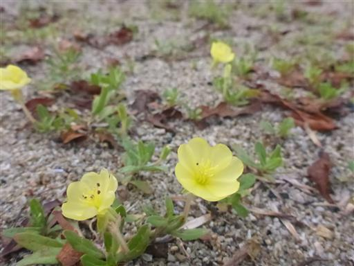
3日連続山に行くのは嫌と子供達が言うので、山に行けるのは今日か明日。
今日は東の方に宿をとっているので、選択肢としては今日の西赤石山か明日の剣山か。
どっちかと言えば、西赤石山の方に惹かれるので、2日連続の山登りとする。
登山口は一昨日訪れたばかりのマイントピア別子。
キャンプ場撤収に時間がかかり遅い時間の到着となったため、駐車場は車で一杯だ。
わずかに残っているスペースに車を停める。標高750m。
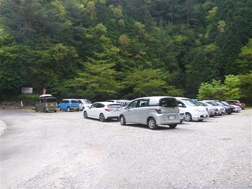
駐車場の奥に続く道を歩いていく。
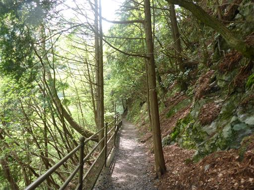
しばらく歩くと広場に到着する。この辺りまではまだ観光エリアだ。
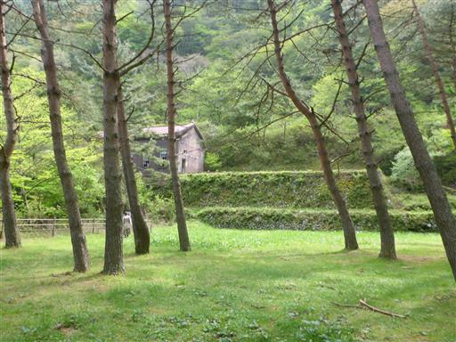
第三通洞。明治時代に造られた坑口跡だ。
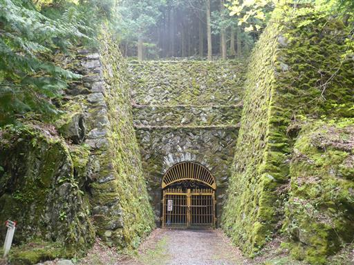
ここは登山道の分岐点。
右周りの周回コースを歩こうと考えていたが、標識がどの道を指しているかがよく分からず
西赤石山を指す標識は左周り方向の道のみだったため、安全に左周りルートを選択する。
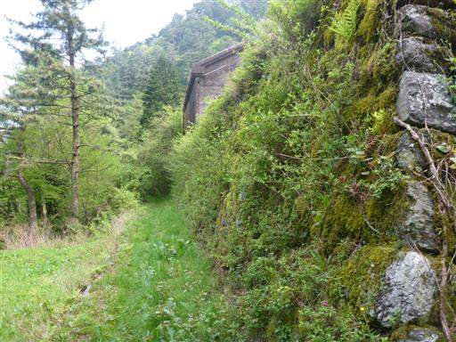
石畳の道を登って行く。これも別子銅山の遺構だろう。
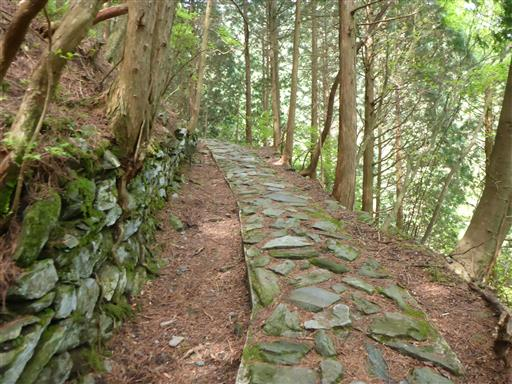
しばらく登ると分岐点に到着。地図に記載の分岐点と一致せず現在地が分からない。
標識はたくさんあるが、西赤石山の文字は見当たらず、地図に記載のない地名ばかりだ。
まずは新太平抗方面に向かってみることにする。
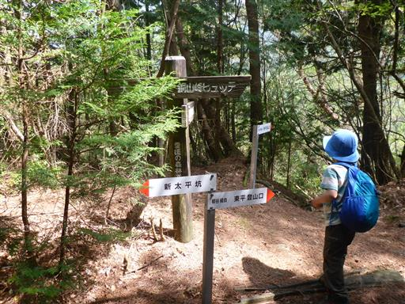
しばらく歩くが、道は全く登る気配を見せない。
道も怪しくなってきたため引き返すことにする。
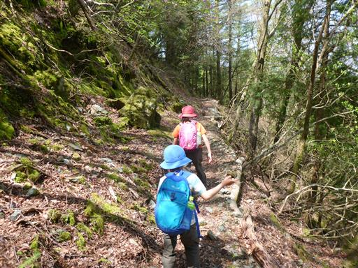
地図に記載のない分岐点だったようで、反対方向の道が正しかったようだ。
正しい道に復帰してしばらく登ると大きく展望が開ける。
目の前に見えるのが西赤石山で斜面がアケボノツツジでピンク色に染まっている。
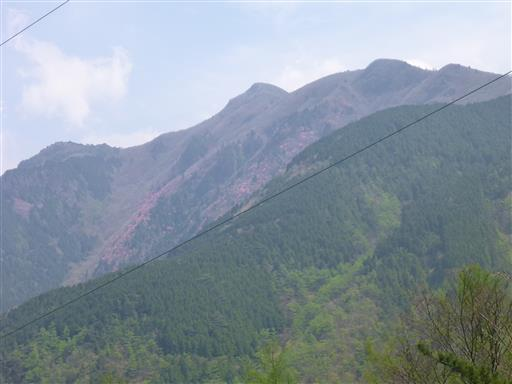
石畳の道が続く。2日連続の登山で子供たちの足取りは重い。
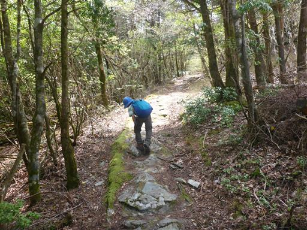
こんなところにお墓だろうか？
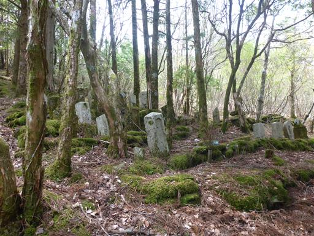
道を先導するように鳥が逃げていく。
1分程度ずっと前の方を飛んでは止まり飛んでは止まりを繰り返していた。
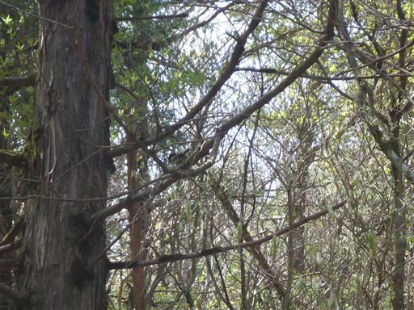
銅山越に到着。第一通洞が開通するまでの184年間、
人夫が粗銅を背負ってこの峠を超えていた。
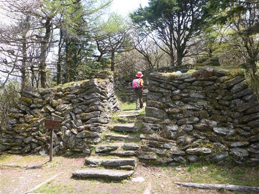
標識には東赤石山まで4時間との記載がある。
本当は東赤石山まで行きたいのだが、このパーティではとても無理だ。
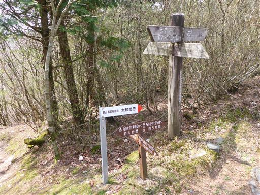
ここから先は分かりやすい尾根道。もう道に迷う心配はなさそうだ。
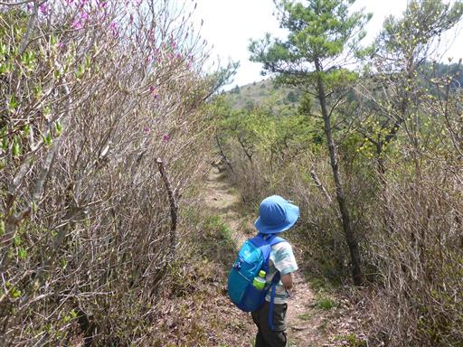
この尾根道は木が疎らで展望が良いのだが、直射日光が暑い。
もう11時半で登山開始時間が遅れたのが響いている。
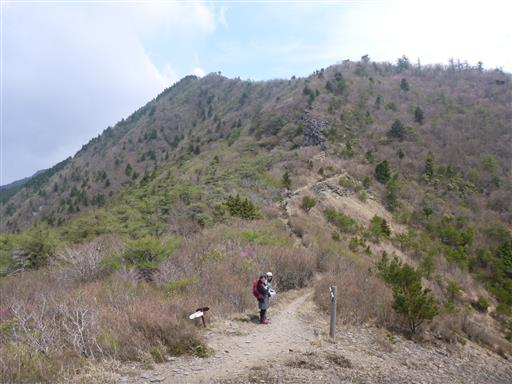
これはミツバツツジだろうか？
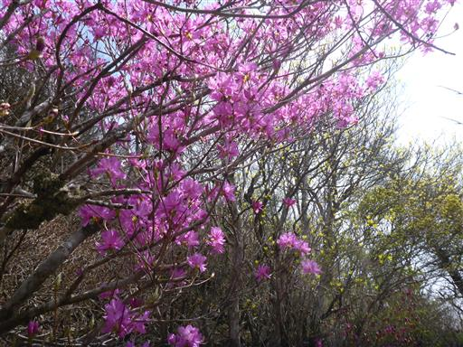
美しい道。ちょっと道幅が狭い。
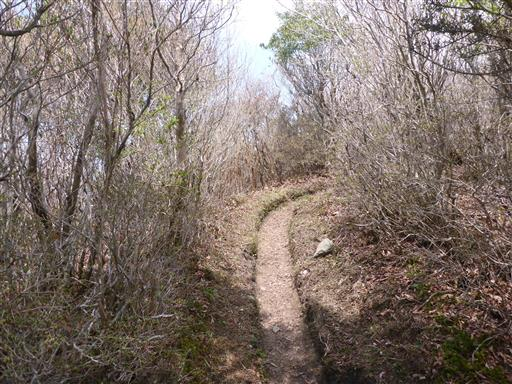
岩場を乗り越える。昨日の山に比べれば楽勝だ。
息子は銅山越からエンジンがかかり、娘は大きく後れを取る。
どちらかがやる気を見せると、もう片方がやる気を失うのはいつものパターンだ。
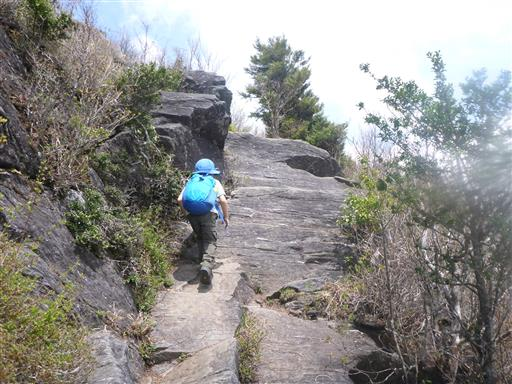
遠く高い山の展望が広がる。東赤石山だろうか？

尾根道は続く。目的地の西赤石山はなかなか見えず、
アップダウンを繰り返す精神的にタフな道だ。
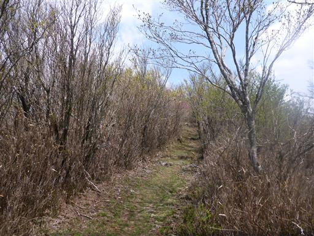
歩いてきた稜線を振り返る。
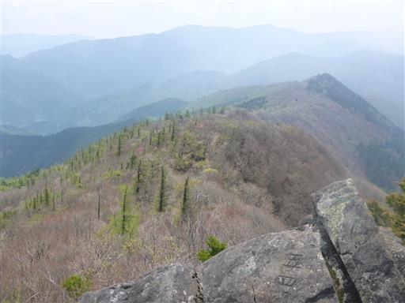
雲が増えてきて山にかかり始める。
今日は快晴だと思っていたが、そうでもないようだ。
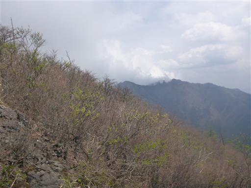
何度かのピークを越すと、西赤石山に到着する。標高1626m。
ここまで長い道のりだったが、思ったよりは早く到着できた。
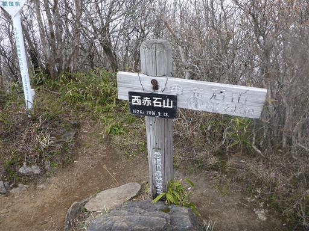
次々と雲がやって来て、展望を隠していく。
大展望を期待していただけに残念だ。
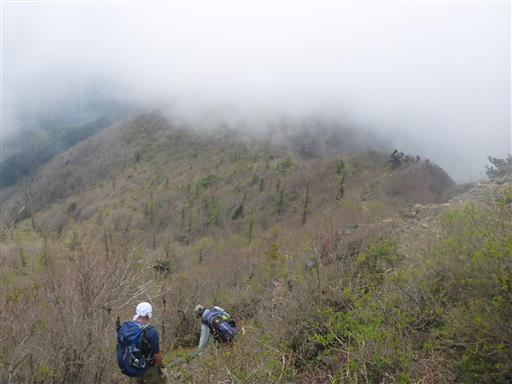
雲の中、申し訳程度に咲いているアケボノツツジがチラホラ見える。
展望は広がらないが、12時を過ぎたので昼食休憩をとる。
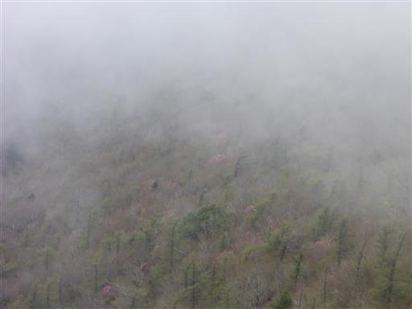
下山は兜岩経由で。
いきなりの泥の急斜面だが、見た目ほどは滑らない。
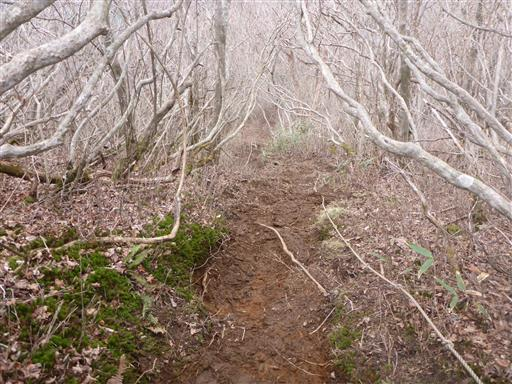
ロープに捕まりながら慎重に下る。
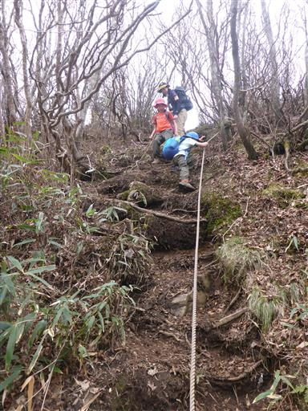
次は脚立で作られた梯子。
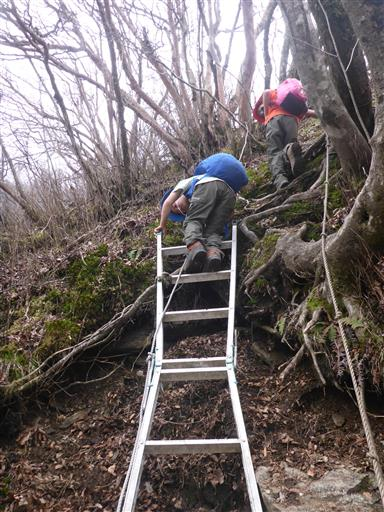
兜岩に到着する。ここはアケボノツツジの展望台として有名だ。
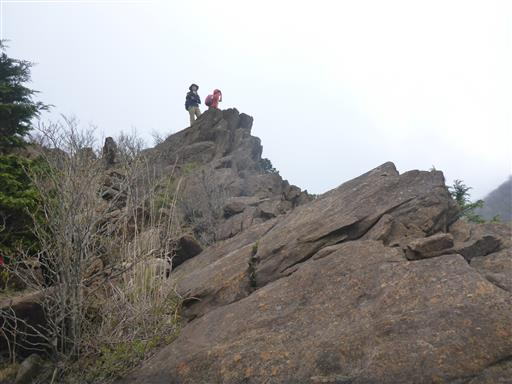
息子は岩場が楽しくて、前の人に付いてどんどん進んでいくので制止。
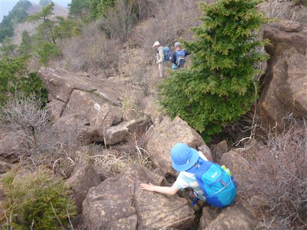
この斜面にアケボノツツジの大群落が見られるはずなのだが、
残念ながら全く咲いていない。時期が悪いのだろうか？
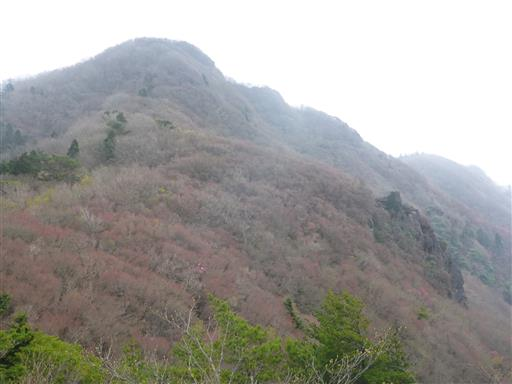
遠くの方の斜面でアケボノツツジの群落が見られる。
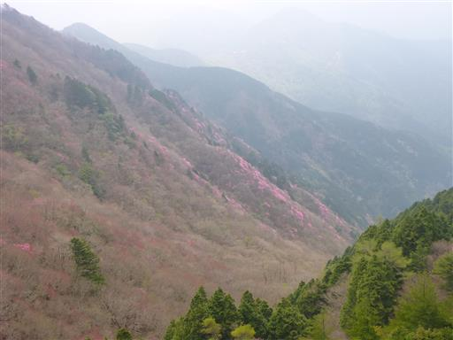
兜岩は全体に不思議な模様ができている。
何の影響でできた模様だろう？
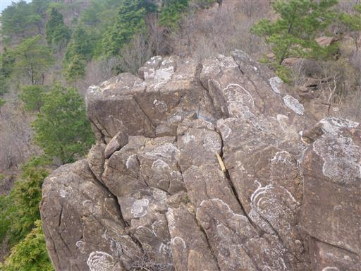
アケボノツツジの展望を眺めたら、下山の続きだ。
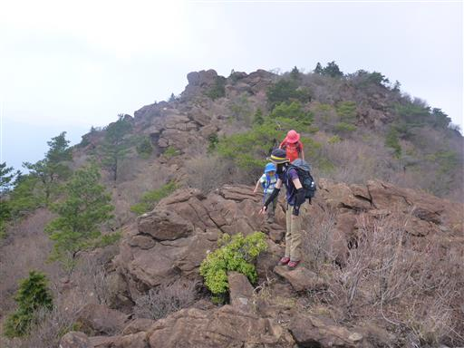
周囲に黄色の花が咲いている。ダンコウバイだろうか？
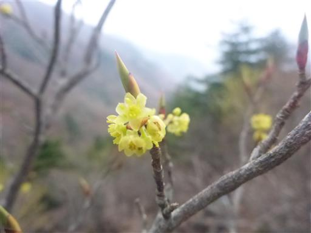
どこかに展望が広がる場所が無いか探しながら下ってきたが、
植林地帯の中に入って展望は無くなってしまう。
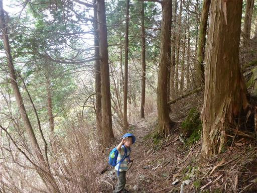
反対側のすぐ近くの斜面にはアケボノツツジの大群落が広がっているのに
植林の隙間から僅かに覗き見ることしかできないのは口惜しい。
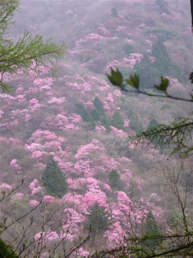
急な斜面を下りきると平坦な道に出る。
ここは分岐点になっていて右に向かう。
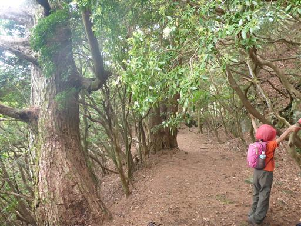
この辺りも別子銅山の遺構だろう。石垣などそれらしいものが随所に見られる。
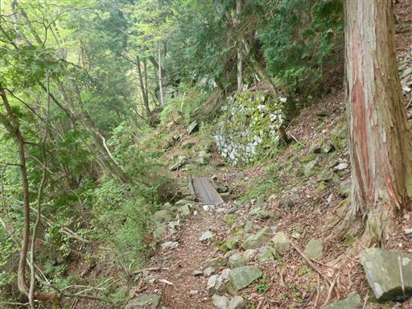
岩が割れて落ちてきそうだ。
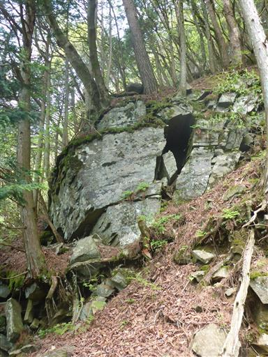
大きな岩が落ちている。滑り台みたいだが滑りは今一だ。
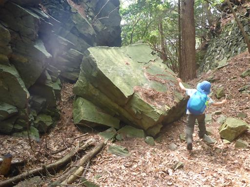
旧時代の橋。崩れているので渡ることはできない。
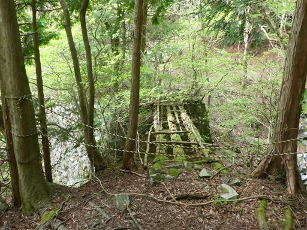
登山道は迂回路が付けられている。
いつ頃造られた橋なのだろうか？
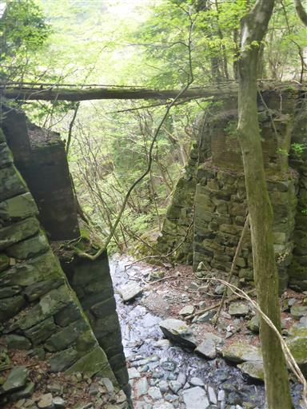
登山道は山の中腹に付けられていて傾斜はあまりない。
歩くのは楽だが、なかなか標高が下がらない。
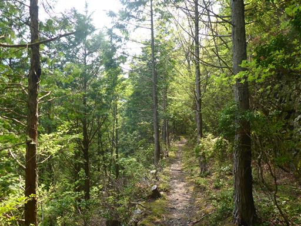
一本松停車場に到着する。ここから東平に下山する。
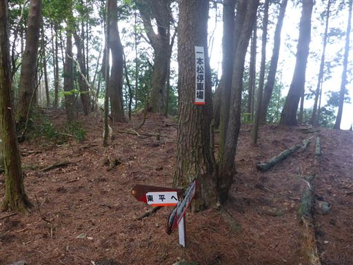
ようやく展望が開けて、見上げると西赤石山の斜面にアケボノツツジが見える。
ここまで下ってしまうと、さすがにちょっと遠すぎる。
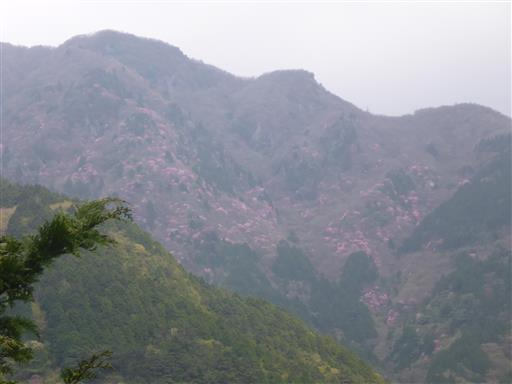
周回コースの起点に出てくる。思った通りの場所に出てきた。
遠くの標識には「一本松停車場」と記載されているが、どこを指しているのか分かりづらい。
地図には「一本松停車場」の記載がない。
標識の地名と地図の地名がことごとく一致しない山だった。
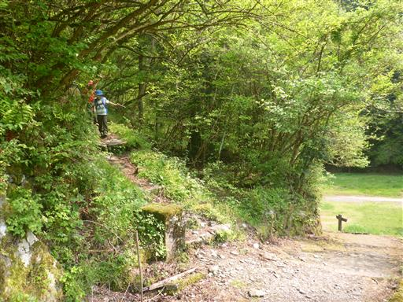
すぐそばに第三変電所の遺構があるので、見学していくことにする。
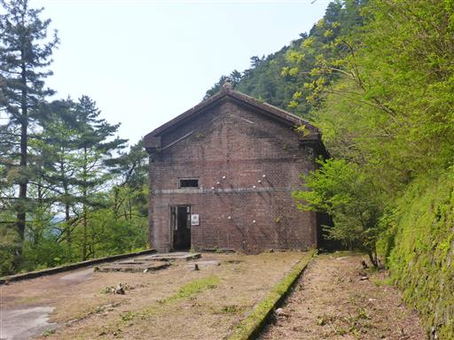
かなり古そうで、漆喰がはがれている。
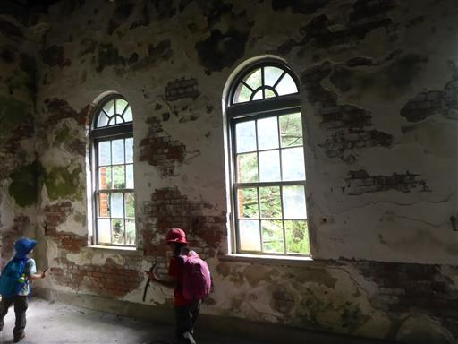
空き缶が並んでいる。これも遺構として残されているのだろうか？
見学を終えたら駐車場まで戻ってくる。
一昨日は雲に覆われて東洋のマチュピチュをあまり見学できなかったが
これから祖谷まで行かなければいけないので、準備をしたら即出発する。
車を走らせること3時間。祖谷の旅館「お山荘」に到着する。
宿の前からは美しい景色が広がる。
風呂に入っていると突然夕立が来る。
大雨が降ってすぐに止んだ。夏のような天気だ。
雲が夕日に照らされて赤く染まっている。
今夜は久しぶりに布団で寝られる。